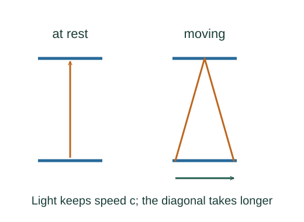

Derive time dilation with a light clock
A light clock measures time by a pulse bouncing between mirrors. In a frame where the clock moves sideways, the light travels a longer diagonal path while retaining speed c.
What the symbols mean
Δτ: proper time between ticks at the same clock location in its rest frame; Δt: corresponding time in a frame where the clock moves at speed v.
When this applies
Special relativity, inertial relative motion, vacuum light speed invariant in every inertial frame, and transverse mirror separation ℓ.
Developing the argument

Measure one round trip in the clock frame
The pulse goes a distance ℓ to the upper mirror and ℓ back. The clock remains at a fixed spatial location in this frame.
Draw half the moving-frame trip
During half the interval, the clock moves horizontally vΔt/2 while the pulse moves diagonally cΔt/2. The transverse separation remains ℓ.
Solve the geometric equation
Move the horizontal-motion term to the left and substitute ℓ = cΔτ/2. The ratio produces the Lorentz factor.
Identify which interval is proper time
The proper-time events occur at one location in the clock’s rest frame. For a clock moving uniformly between those events, the other frame assigns the longer coordinate interval.
A worked example
At v = 0.80c, γ = 5/3. A 3 μs proper-time interval corresponds to 5 μs in the frame where the clock moves at that speed.
Derivation behind this calculation ↗A point to keep straight
The two observers’ statements about distant clock readings require relativity of simultaneity. Do not compare arbitrary event pairs using a proper-time label.
Check the assumptions and derivation ↗